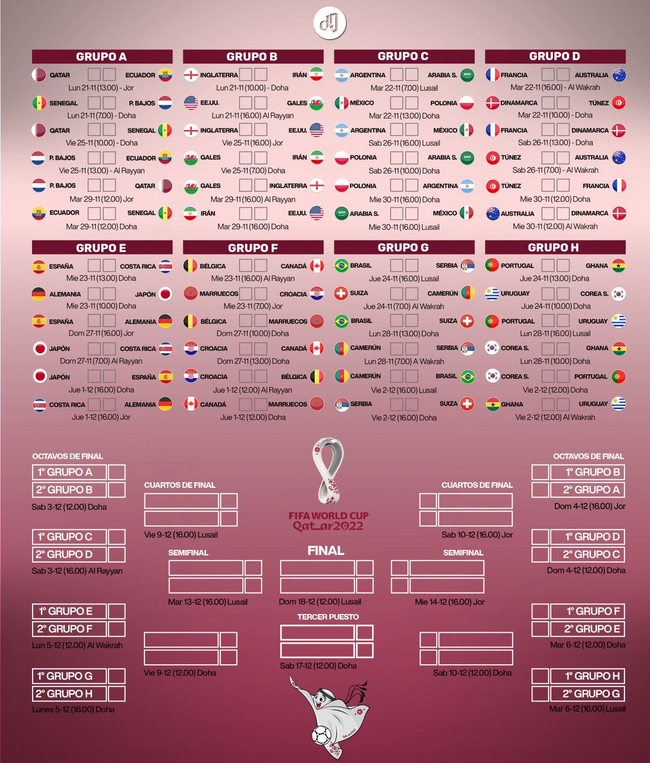

Prode Del Mundial Qatar 2022
Informacion del torneo
Fase de grupos
Bienvenidos al prode del mundial Qatar 2022, van a poder competir entre amigos, familiares, compañeros de trabajo para ver quien es el que sabe mas de futbol durante esta competencia.
Los invitamos a participar y divertirse con el prode mundialista, que comience a rodar la caprichosa.
Les dejamos el fixture con los dias, horarios y partidos, para estar al dia de cada encuentro.

Reglas del prode mundialista
Las reglas son las siguiente:
- Cada jugador tiene que completar toda la fase de grupos al menos 1 dia antes de que arranque el mundial, una vez que inicie la competencia ya no se pueden modificar los resultados.
Luego de la fase de grupos arrancan los octavos de final, apartir de ahi se completa por etapas (octavos de final, cuartos de final, semifinal, tercer y cuarto puesto y la gran final) 2 hora antes de que empieze el primero partido de cada etapa es el tiempo limite que tienen para completar los resultados - Por adivinar como sale el partido, puede ser que gane un equipo o que empaten, son 3 puntos, pero si algun participante adivina el resultado exacto son 5 puntos.
- Ejemplo: Resultado real del partido EquipoA 2 vs 0 EquipoB
EquipoA GolesA GolesB EquipoB Puntos Argentina 2 1 Polonia 3 Argentina 1 1 Polonia 0 Argentina 0 1 Polonia 0 Argentina 2 0 Polonia 5